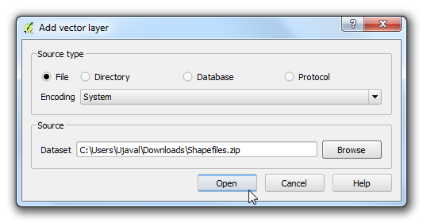
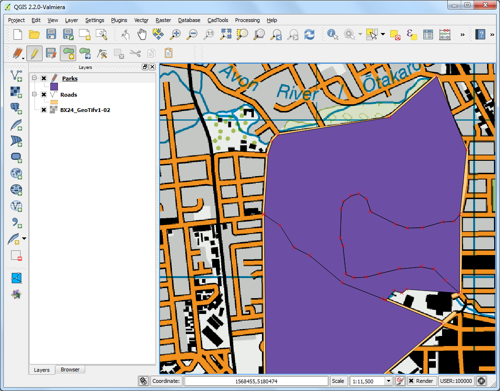

Digitizarea datelor provenite din hărți
[ Download PDF
A4
Letter ]
Digitizarea este o sarcină comună pentru un specialist GIS. Adesea, o mare cantitate de Timp GIS este consumată în activitatea de digitizare a datelor raster, în urma căreia rezultă straturile vectoriale ce vor fi utilizate în analiza dumneavoastră. QGIS are puternice capabilități de digitizare și editare pe ecran, pe care le vom explora în acest tutorial.
Privire de ansamblu asupra activității
Vom folosi o hartă topografică raster și vom crea mai multe straturi vectoriale, reprezentând entitățile din jurul unui parc.
Alte competențe pe care le veți dobândi
Construirea de piramide pentru seturile de date raster, de mari dimensiuni, pentru a accelera operațiunile de mărire și deplasare.
Lucrul cu baza de date Spatialite.
Procedura
Mergeți la . Localizați fișierul descărcat BX24_GeoTifv1-02.tif și efectuați clic pe Open.

Acesta este un fișier raster mare, fiind posibil să observați că, atunci când măriți sau deplasați harta, e nevoie de un pic de timp pentru randarea imaginii. QGIS oferă o soluție simplă pentru încărcarea mult mai rapidă a rasterelor, prin utilizarea Piramidelor de Imagini. QGIS creează plăci pregătite la diferite rezoluții, acestea fiind prezentate în locul unui raster complet. Acest lucru face ca navigația prin hartă să devină mai fluentă și mai receptivă. Faceți clic dreapta pe stratul BX24_GeoTifv1-02 și alegeți Properties.

Alegeți fila Pyramids. Țineți tasta Ctrl apăsată și selectați toate rezoluțiile oferite în panoul Resolutions. Lăsați valorile implicite pentru celelalte opțiuni și faceți clic pe Build pyramids. O dată procesul terminat, clic pe OK.

Înapoi, în fereastra principală a QGIS, utilizați instrumentul Zoom pentru a localiza zona Hagley Park din Christchurch. Acesta este parcul pe care îl vom digitiza.

Înainte de a începe, e nevoie să setăm Opțiunile de digitizare implicite. Mergeți la .

Selectați fila Digitizing din fereastra de dialog Options. Setați Default snap mode pentru To vertex and segment. Acest lucru va permite atragerea automată, către cel mai apropiat nod sau segment de linie. De asemenea, preferăm să setăm Default snapping tolerance și Search radius for vertex edits în pixeli, în locul unităților hărții. Acest lucru ne oferă garanția că distanța de atragere rămâne constantă, indiferent de nivelul de mărire. În funcție de rezoluția ecranului dvs., puteți alege o valoare corespunzătoare. Clic pe OK.

Acum suntem gata pentru a începe digitizarea. Vom crea mai întâi un strat de drumuri și vom digitiza drumurile din jurul parcului. Selectați . Dacă doriți, puteți crea un New Shapefile Layer..., în schimb. Formatul bazei de date Spatialite este de tip deschis, similar formatului geodatabase ESRI. Baza de date Spatialite este stocată într-un singur fișier de pe hard disk și poate include atât tipuri spațiale (punct, linie, poligon), cât și straturi non-spațiale. Acest lucru ușurează portabilitatea, comparativ cu utilizarea unei mulțimi de fișiere shape. În acest tutorial, vom crea o pereche de straturi de tip poligon și un strat de tip linie, astfel încât o bază de date Spatialite va fi foarte potrivită. Puteți încărca întotdeauna un strat spatialite și să-l salvați ca fișier shape, sau în orice alt format dorit.

În fereastra de dialog New Spatialite Layer, faceți clic pe butonul ... și salvați o nouă bază de date Spatialite numită nztopo.sqlite. Alegeți Roads pentru Layer name, apoi selectați Line pentru Type. Harta topografică de bază este în CRS-ul EPSG:2193 - NZGD 2000, deci vom alege același lucru pentru stratul nostru de drumuri. Bifați caseta Create an autoincrementing primary key. În acest mod, se va crea un câmp numit pkuid în tabela de atribute și se va atribui un ID numeric, unic, în mod automat, pentru fiecare entitate. Atunci când se creează un strat GIS, trebuie să decideți cu privire la atributele pe care le va avea fiecare entitate. Din moment ce acesta este un strat de drumuri, vom avea două atribute de bază - nume și clasă. Introduceți Name ca Name al atributului din secțiunea New attribute, după care faceți clic pe Add to attribute list.

În mod similar, creați un nou atribut Class de tipul Text data. Clic pe OK.

După ce stratul este încărcat, faceți clic pe butonul Toggle Editing, pentru a trece stratul în modul de editare.

Efectuați clic pe butonul Add feature. Clic pe suportul hărții pentru a adăuga un nou nod. Adăugați noi noduri de-a lungul entității care reprezintă drumul. După ce ați digitizat un segment de drum, faceți clic dreapta pentru a încheia entitatea..
Note
Puteți utiliza rotița de scroll a mouse-ului pentru a mări sau a micșora în timpul digitizării. Puteți menține apăsat, de asemenea, butonul de scroll și să mișcați mouse-ul pentru deplasare.

După ce faceți clic dreapta pentru a înceta editarea entității, veți obține o fereastră de dialog de tip pop-up, Attributes. Aici puteți introduce atributele entității nou create. Deoarece pkuid este un câmp de auto-incrementare, nu veți putea introduce manual o valoare. Lăsați-l gol și introduceți numele drumului, așa cum apare pe harta topo. Opțional, mai puteți atribui drumului o Clasa Road. Faceți clic pe: guilabel: OK.

Stilul implicit al noului strat de tip linie este cel al unei linii subțiri. Să-l schimbăm, astfel încât să putem observa mai bine entitățile digitizate pe suportul hărții. Faceți clic dreapta pe stratul Roads și selectați Properties.

Selectați fila Style din fereastra de dialog Properties Layer. Alegeți un stil de linie mai gros, cum ar fi Primary din stilurile predefinite. Faceți clic pe OK.

Acum, veți vedea clar entitatea drumului digitizat. Clic pe Save Layer Edits pentru a salva noua entitate pe disc.

Înainte de a digitiza drumurile rămase, este important să actualizați alte setări care sunt importante pentru a crea un strat fără erori. Mergeți la .

În fereastra guilabel:Snapping Options, bifați opțiunea Enable topological editing. Această opțiune vă asigură că limitele comune sunt menținute în mod corect în straturile de tip poligon. De asemenea, bifați Enable snapping on intersection care vă permite atragerea către o intersecție dintr-un strat de fundal.

Acum, puteți face clic pe butonul Add feature și să digitizați alte drumuri din jurul parcului. Nu uitați să apăsați Save Edits după ce adăugați o nouă entitate, pentru a vă salva munca. Un instrument util în digitizare este Node Tool. Clic pe butonul Node Tool.

O dată ce s-a activat instrumentul Nod, faceți clic pe orice entitate pentru a afișa nodurile. Apăsați pe un anumit nod pentru a-l selecta. Nodul își va schimba culoarea, o dată ce este selectat. Faceți clic pe el, apoi glisați mouse-ul pentru a-l deplasa. Acest lucru este util atunci când doriți să efectuați ajustări, în urma creării unei entități. De asemenea, puteți șterge un nod selectat, făcând clic pe tasta Delete. (Option+Delete pe Mac)

Odată ce ați terminat digitizarea tuturor drumurilor, faceți clic pe butonul Toggle Editing.

Acum, vom crea un strat poligonal, reprezentând limitele parcului. Mergeți la . Selectați baza de date nztopo.sqlite din listă. Denumiți noul strat ca Parks. Selectați Polygon pentru Type. Creați un nou atribut numit Name. Clic pe OK.

Clic pe butonul Add feature și faceți clic pe suportul hărții pentru a adăuga un nod. Digitizați poligonul care reprezintă parcul. Asigurați-vă că nodurile sunt atrase înspre drumuri, astfel încât să nu rămână spații între poligoanele parcului și liniile drumului. Faceți clic-dreapta pentru a finaliza poligonul.

Introduceți numele parcului în fereastra de tip pop-up Attributes.

Straturile poligonale oferă o altă setare foarte utilă numită Evitare intersecții, pentru poligoanele noi. Mergeți la . Bifați caseta din coloana Avoid Int, corespunzătoare stratului Parks. Cilc pe OK.

Acum, faceți clic pe Add feature pentru a adăuga un poligon. Cu Avoid intersections of new polygons, veți putea digitiza rapid un nou poligon, fără a vă îngrijora de acroșarea exactă la poligoanele vecine.

Faceți clic-dreapta pentru a termina poligonul, și introduceți atributele. În mod magic, noul poligon este redimensionat și repoziționat exact la marginea poligoanelor vecine! Acest lucru este foarte util în digitizarea limitelor complexe atunci când nu trebuie multă precizie, și totuși, veți obține un poligon corect din punct de vedere topologic. Clic pe Toggle Editing pentru a încheia editarea stratului Parks.

Acum este timpul digitizării unui strat de clădiri. Creați un nou strat poligonal numit Buildings, mergând la .

O dată ce este adăugat stratul Buildings, ascundeți straturile Parks și Roads astfel încât harta topo de bază să fie vizibilă. Selectați stratul Buildings și faceți clic pe Toggle Editing.
Digitizarea clădirilor poate fi o sarcină greoaie. De asemenea, este dificilă adăugarea manuală a nodurilor, în așa fel încât muchiile să fie perpendiculare și să formeze un dreptunghi. Vom folosi un plugin numit Rectangles Ovals Digitizing pentru a ne ajuta în această sarcină. Parcurgeți Utilizarea Plugin-urilor pentru a învăța despre căutarea și instalarea plugin-urilor. O dată ce ați instalat plugin-ul Rectangles Ovals Digitizing, veți observa o nouă bară de instrumente deasupra suportului de hartă.

Măriți o zonă oarecare, cu clădiri, și faceți clic pe butonul Rectangle by Extent. Faceți clic și glisați mouse-ul pentru a desena un dreptunghi perfect. În mod similar, adăugați restul clădirilor.

Veți observa că unele clădiri nu sunt verticale. Va trebui să desenăm un dreptunghi, rotit la un anumit unghi, pentru a se potrivi cu amprenta clădirii. Faceți clic pe Rectangle from center.

Faceți clic în centrul clădirii și, menținând butonul apăsat, trageți mouse-ul pentru a desena un dreptunghi vertical.

Trebuie să rotim acest dreptunghi pentru a se potrivi cu imaginea de pe harta topo. Instrumentul de rotire este disponibil în bara de instrumente Advanced Digitizing. Faceți clic-dreapta pe o suprafață liberă din zona barei de instrumente, pentru a activa Advanced Digitizing.

Clic pe butonul Rotate Feature(s).

Folosiți instrumentul Select Single feature pentru a selecta poligonul pe care doriți să-l rotiți. O dată ce instrumentul Rotate Feature(s) este activat, veți vedea marcat centrul poligonului. Faceți clic, exact pe marcaj, apoi trageți mouse-ul în timp ce mențineți apăsat butonul stâng. Va apărea o previzualizare a entității rotite. Eliberați butonul mouse-ului atunci când poligonul s-a aliniat cu amprenta clădirii.

Salvați modificările stratului și faceți clic pe Toggle Editing, o dată ce ați terminat de digitizat toate clădirile. Aveți posibilitatea să glisați straturile pentru a schimba ordinea apariției.

Activitatea de digitizare este încheiată. Puteți jongla cu opțiunile de stilizare și etichetare din fereastra cu proprietățile stratului, pentru a crea o hartă plăcută.